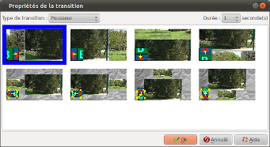
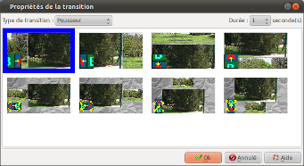

Introduction
La boite "Propriétés de
la transition entrante" permet de régler les transitions
entrantes des diapositives :

Cette boite est appelée en double cliquant sur la zone transition des diapositives depuis la barre de temps de la fenêtre principale.

Cette boite est appelée en double cliquant sur la zone transition des diapositives depuis la barre de temps de la fenêtre principale
Description de la boite de dialogue
| Type de transition | Permet de sélectionner
une famille de transition :
|
||||||||
| Durée |
Permet de définir la
durée de l'animation. Les choix possibles sont :
|
Voir aussi
 WIKIPEDIA |
Explications
sur les LUMA |
Dernière modification : domledom le 11/06/2011